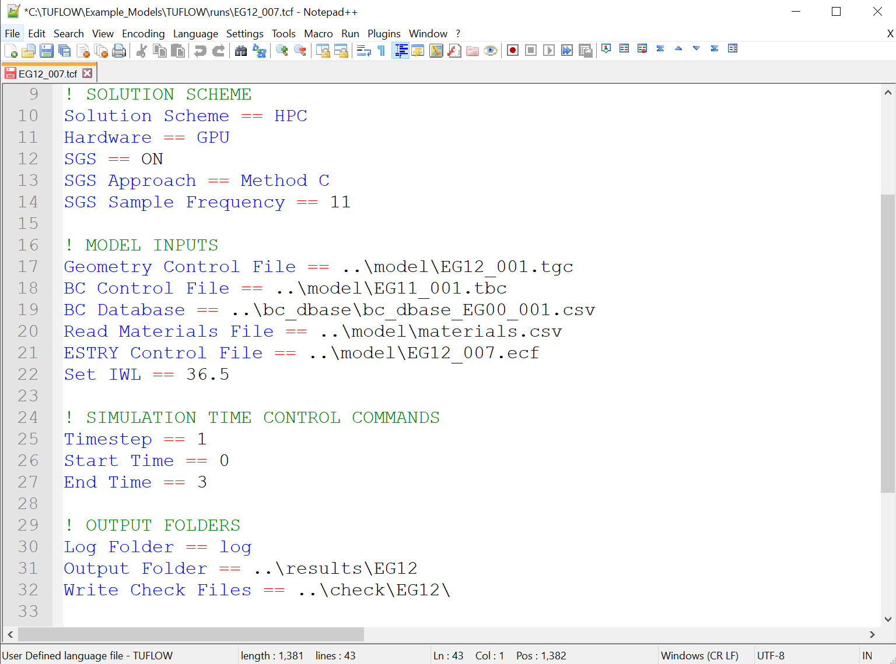
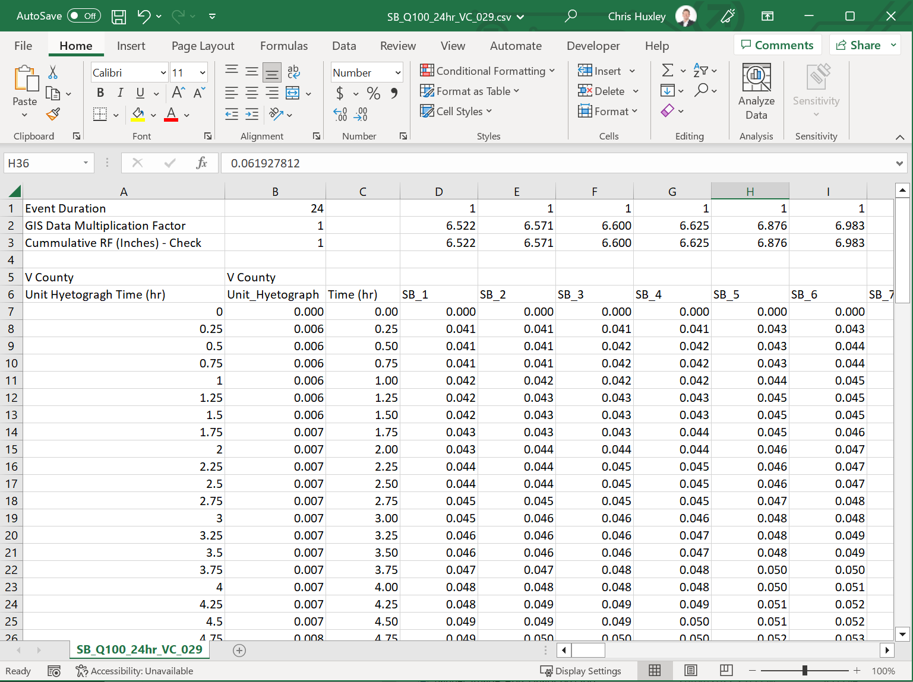
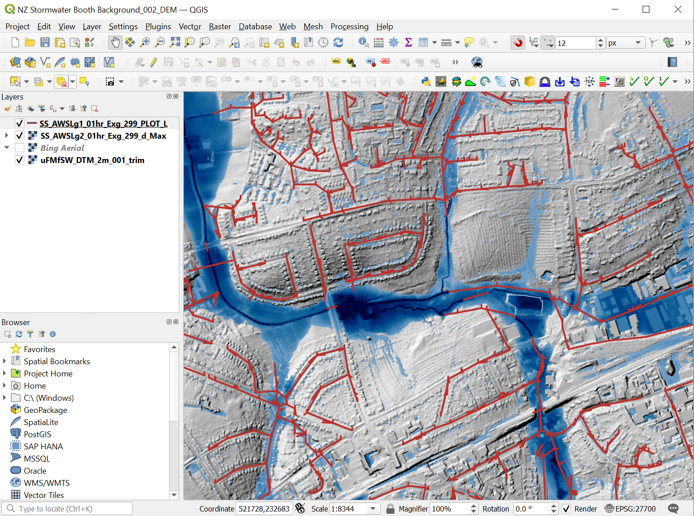
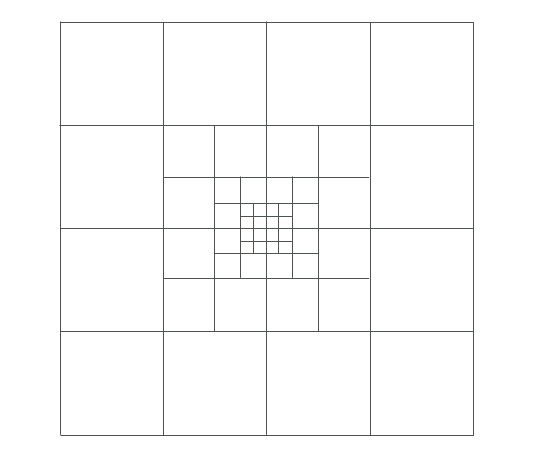

| Software | |
|---|---|
A Text Editor is used to create and edit TUFLOW simulation control files. The control files list all the simulation commands and file path references to the above mentioned GIS and tabular datasets. |
 |
Spreadsheet Software is used to tabulate time-series and other non-geographically located data. |
 |
GIS Software is used to set up, modify, thematically map and manage all geographic inputs and to view simulation results. QGIS’s TUFLOW Plugin greatly enhances the modelling experience. |
 |
1 Introduction
1.1 TUFLOW Products
TUFLOW Products includes a suite of hydraulic modelling software for the numerical simulation of urban drainage, catchment runoff, flooding, pollutant export, as well as estuarine, lacustrine and coastal hydrodynamics and associated environmental processes. Developed through close collaboration with universities and our users, TUFLOW software is known for its high scientific standard, accuracy, rigorous benchmarking, and workflow efficiency.
The TUFLOW suite includes two primary pieces of software:
TUFLOW Classic/HPC which uses a fixed grid of square two-dimensional (2D) cells with optional one-dimensional (1D) elements and networks as the computational structure. TUFLOW Classic/HPC presently includes two 2D computational solver options, coupled to several 1D solvers:
- TUFLOW’s “Classic” solver is a 2D ADI (Alternating Direction Implicit) 2\(^{nd}\) order spatial finite difference CPU (Central Processing Unit) solver. TUFLOW Classic was the original TUFLOW 2D solver, which started development in 1989.
- TUFLOW’s “HPC” (Heavily Parallelised Compute) solver is a 2D explicit, 1\(^{st}\) or 2\(^{nd}\) order spatial and 4\(^{th}\) order temporal, parallelised finite volume solver. TUFLOW HPC can use either CPU and Graphics Processor Unit (GPU) hardware for its compute. GPU hardware acceleration enables TUFLOW HPC to run simulations up to 100 times faster than Classic. TUFLOW HPC was originally added to the TUFLOW suite in 2011 initially as a 1\(^{st}\) order spatial solver known as TUFLOW GPU, then in 2018 as a more accurate 2\(^{nd}\) order spatial solver. In addition to offering much faster run-times, TUFLOW HPC offers industry leading accuracy that is the same or better than Classic, shock-capturing and excellent stability with zero mass error.
- TUFLOW 1D (ESTRY) is an explicit finite difference 1D solver. TUFLOW 1D is a powerful open channel and underground pipe network solver, which started development in 1972 and has continued to be enhanced to the present day. TUFLOW 1D is dynamically linked to both the Classic and HPC 2D solvers.
- EPA SWMM 1D (SWMM) is a widely used 1D program for simulating urban and non-urban watersheds’ hydrologic and hydraulic behaviour. Initially developed in the early 1970s by the US Environmental Protection Agency (EPA), the model has since undergone numerous updates and enhancements to become one of the most used 1D stormwater runoff tools in North America. SWMM is dynamically linked to the TUFLOW HPC 2D solver.
- Several third-party 1D solvers are also linked to TUFLOW Classic/HPC/TUFLOW 1D – see www.tuflow.com/products/gui-options/.
TUFLOW Classic/HPC is well suited to simulating integrated urban drainage (surface inundation and sub-surface pipe flows), distributed hydrology direct rainfall (rain-on-grid) catchment runoff and flooding.
Additional functionality is available via several modules including GPU acceleration, varying grid cell sizes, and advection-dispersion (see Section 1.1.5.1).
This manual provides user guidance for applying the above solvers. All references to “TUFLOW” in this manual refer to the combination of the above solvers (TUFLOW Classic, HPC and 1D/ESTRY).
TUFLOW FV is TUFLOW’s 2D and 3D capable flexible mesh solver with optional 1D elements as the computational structure. It uses a 1\(^{st}\) or 2\(^{nd}\) order spatial finite volume solver, supporting both triangular and quadrilateral cells in the computational domain. TUFLOW FV specialises in coastal, estuarine, wetland and lake hydrodynamic studies. It can also be used to model rivers when environmental processes such as sediment transport and/or water quality need to be assessed. To model environmental processes, TUFLOW FV offers advanced Advection Dispersion (AD), Sediment Transport and Morphology (ST), Particle Tracking (PT) and Water Quality (WQ) capabilities.
This manual DOES NOT provide user guidance for TUFLOW FV. The TUFLOW FV manual is available for download from the TUFLOW website.
Linkage between TUFLOW HPC and TUFLOW FV is available using the TUFLOW CATCH Module.
1.1.1 TUFLOW Classic – 2D Semi-Implicit Solver
TUFLOW’s ADI 2D solver, branded TUFLOW Classic, is based on the scheme of Stelling (1984), and is documented in Syme (1991). It solves the full two-dimensional, depth-averaged, momentum and continuity equations for free-surface flow using a 2\(^{nd}\) order semi-implicit matrix solver. The scheme includes all the key physics including representation of inertia and sub-grid-scale turbulence (horizontal diffusion of momentum or eddy viscosity).
The initial development of TUFLOW Classic was carried out as a joint research and development project between WBM Oceanics Australia (now BMT) and the University of Queensland in 1989. The project successfully developed a 1D/2D dynamically linked modelling system (Syme, 1991). Since the initial research project, TUFLOW Classic has seen continuous year on year research and development. Notable improvements from then to today include the ability to accommodate both sub and supercritical flow regimes, inclusion of various 2D hydraulic structure options, catchment flood and urban inundation modelling and risk assessment features, advanced 1D/2D and 2D/2D linking, and workflow efficient GIS data management.
For legacy reasons, TUFLOW Classic is the default 2D fixed grid solver, however, since the 2020‑01 release, the TUFLOW HPC solver with GPU acceleration is typically preferred by industry over TUFLOW Classic due to its superior speed, unconditional stability, zero mass error, and benchmarked accuracy at all physical scales (flume models to major rivers).
1.1.2 TUFLOW HPC – 2D GPU Accelerated Solver
TUFLOW’s explicit 2D solver, branded TUFLOW HPC (Heavily Parallelised Compute), started its development in 2011, with a focus on harnessing the power of heavily parallelised processing units found in Graphical Processing Unit (GPU) devices (also known as a video or graphics card). TUFLOW HPC uses a different solution scheme to TUFLOW Classic. A different solution scheme was necessary because TUFLOW Classic’s 2D implicit solver is not as well suited to parallelisation due to dependencies within numerical loops.
TUFLOW HPC solves the full 2D free-surface equations including the inertia and sub-grid turbulence (eddy viscosity) terms. The scheme is volume and momentum conserving finite volume, 2\(^{nd}\) order in space and 4\(^{th}\) order in time. TUFLOW HPC has the same advanced 1D/2D link functionality as TUFLOW Classic, and is equally well suited to integrated urban drainage assessments, where overland flow is represented in 2D and the sub-surface pipe network in 1D, or for catchment studies using nested 1D open channels within a broader 2D domain.
Prior to 2017, TUFLOW HPC was preceded by TUFLOW GPU, which was a more simplistic 1\(^{st}\) order spatial solution. TUFLOW GPU had numerous constraints due its 1\(^{st}\) order accuracy, cell-centred configuration and no connectivity to TUFLOW’s 1D solver. Use of TUFLOW GPU is not recommended where reasonable accuracy is required, hence documentation specific to TUFLOW GPU has been largely removed from this manual. For legacy reasons TUFLOW GPU is still supported; for documentation on the superseded solver, please refer to the 2016‑03‑AE TUFLOW User Manual.
TUFLOW HPC’s solution scheme has undergone extensive, advanced development since 2017, arguably making TUFLOW HPC the fastest and most accurate 2D solver in the industry. Key features of TUFLOW HPC include:
- A solution scheme design targeting GPU hardware technology to maximise simulation speeds. TUFLOW HPC using GPU hardware can run simulations over 100 times faster than TUFLOW Classic using CPU hardware, noting that Classic is one of the fastest single core CPU solvers Neelz & Pender (2013). This exceptional speed means very large models (>100 2D million cells) with fine grids can now be run within a sensible timeframe yielding a reliable and accurate solution.
- TUFLOW HPC uses an advanced multi-criteria adaptive time-stepping approach. It includes the ability to revert back in time should a numerical inconsistency occur, thereby providing excellent numerical stability.
- The solution scheme includes all the key physics, including representation of inertia and sub-grid turbulence. Comprehensive benchmarking against theoretical solutions, flume scale measurements, and high quality real-world calibration data, demonstrates superior accuracy across all scales from small flumes to major rivers using default physical coefficients and industry standard Manning’s n values. A summary of TUFLOW HPC’s solution is:
- Finite volume solution scheme that demonstrates 100% volume conservation.
- 2\(^{nd}\) order spatial scheme that avoids numerical diffusion issues experienced by other mainstream software that typically use 1\(^{st}\) order spatial approximations.
- New grid size insensitive sub-grid turbulence (eddy viscosity) solution. Default sub-grid turbulence parameters produce reliable results at any model 2D grid scale (centimetres for flume benchmarking to over 100 metres for large scale catchment simulations). This advanced feature is not available in TUFLOW Classic or other hydraulic modelling software.
- Sub Grid Sampling (SGS) of ground elevations at sub-cell resolutions for defining cell storage and cell face conveyance produces more accurate cell volume estimates and flow exchange between neighbouring cells at resolutions finer than the 2D grid resolution. This advanced feature, which is not available in TUFLOW Classic, offers substantial benefits including exceptional cell size results convergence for large cells allowing models to be run with equivalent accuracy in terms of runoff and water levels on much larger cell sizes than is possible using the traditional approach of one elevation per cell.
- The solver includes exceptional shock capturing capabilities for highly transient flow conditions such as hydraulic jumps and dam breaks. It accommodates both subcritical and supercritical flow regimes.
- Supports quadtree fixed grid refinement. This allows the replacement of one computational cell with four finer resolution cells, subsequently allowing the modeller to represent features at a finer resolution when a detailed velocity field is desired, especially in areas of complex hydraulics. The quadtree feature is extremely easy to implement, can utilise the SGS feature described above, and demonstrates industry leading numerical stability. The add-on Quadtree Module (Section 1.1.5.4) is required to access this feature.
The CPU version of TUFLOW HPC is provided with the standard TUFLOW Classic/HPC licence, noting that when run on a single CPU, TUFLOW HPC typically demonstrates slower simulation speed performance than TUFLOW Classic due to Classic’s implicit (large timestepping) solution. As such, TUFLOW HPC is rarely used in CPU mode except for small models. To achieve the impressive simulation speeds mentioned above, the add-on GPU Module (Section 1.1.5.3) is required for TUFLOW HPC simulations utilising NVIDIA GPU hardware.
For legacy reasons, TUFLOW Classic is the default 2D fixed grid solver. The TUFLOW HPC solver is activated by specifying the command, Solution Scheme == HPC. To instruct TUFLOW HPC to use GPU hardware use the command, Hardware == GPU.
1.1.3 TUFLOW 1D (ESTRY) – 1D Solver
TUFLOW 1D (also known as ESTRY) solves the full one-dimensional (1D) free-surface St Venant flow equations using a Runge-Kutta explicit solver. TUFLOW 1D has seen continuous development and application use since 1972 and is today one of the leading 1D solvers of open channels and pipe networks.
The network schematisation technique used by TUFLOW 1D allows realistic simulation of a wide variety of 1D and quasi-2D situations including complex river geometries, associated floodplains and estuaries and urban channel and pipe network systems. There is a considerable amount of flexibility in the way network elements can be interconnected, allowing the representation of a river and floodplain by many parallel channels with different resistance characteristics and the simulation of braided streams and rivers with complex branching, or pipe networks with tens of thousands of conduits, manholes and inlet pits. This flexibility allows for a variable resolution within the network so that areas of particular interest can be modelled in fine detail, with a coarser network representation being used elsewhere.
In addition to the traditional open channel flow cross-section channels, a wide range of additional 1D channel types are available including:
- Circular, rectangular (box), and irregular (various shapes or user-defined) shaped culverts
- Pit inlets and manholes
- Bridges
- Weirs (including broad-crested, sharp edged, V-notch, ogee, crump and user defined)
- Spillways, radial gates, sluice gates
- Pumps
- User defined structures (stage-discharge curve; discharge matrix)
- Operational controls on most structures (weirs, gates, pumps, etc)
All channel types can be specified as uni-directional, which allows flow in only one direction (using the digitised direction). Most can also be operated via user defined logical controls. The solver can handle both subcritical and supercritical flow regimes.
TUFLOW 1D is documented in Chapter 5. 1D/2D domain linking is discussed in Chapter 10.
1.1.4 EPA SWMM – 1D Solver
TUFLOW has supported 1D/2D dynamic coupling since its initial 2D solver development in 1989. Traditionally, 1D linking and associated modeling has been applied using the TUFLOW 1D (ESTRY) solver (see Section 1.1.3). New in the 2023-03-AF release, TUFLOW’s 1D linking and solver options have been expanded to support the US EPA Storm Water Management Model (referred to herein as SWMM). As such, 1D pipe networks can now be modelled using either the TUFLOW 1D, SWMM, or a combination of the two 1D solvers. In addition to this, extra functionality, such as SWMM hydrology and SWMM Low-impact developments (LIDs) features, can now be used in TUFLOW.
SWMM 1D is documented in Chapter 6. 1D/2D domain linking is discussed in Chapter 10.
1.1.5 Add-on Modules
The add-on modules require the relevant module licence in order to use the requested module functionality. Should you not currently have the required module licence, please contact sales@tuflow.com.
The add-on modules are:
From the 2025.0 release and onwards it is possible to share the GPU Hardware and AD add-on module licences between TUFLOW and TUFLOW-FV. This must be the same lock type (Hardware (USB-2), Software (Digital File) or Cloud (Digital File)) and licence type (Local or Network) as the TUFLOW engine licence of the simulation. If the licence type is Local, it must also reside on the same lock. For more information on licence types see TUFLOW Wiki Licencing Page.
1.1.5.1 Advection Dispersion (AD) Module
TUFLOW’s AD (Advection Dispersion) module is available for TUFLOW Classic and HPC. It provides the capability to simulate constituent fate and transport in receiving waters. It is applicable to:
- Mixing in inland waterways
- Fate of dissolved constituent plumes
- Flushing assessments
TUFLOW’s AD User Manual, previously a separate document, has been integrated into this manual, see Chapter 9.
1.1.5.2 TUFLOW CATCH Module
The TUFLOW CATCH module facilitates seamless simulation of whole-of-catchment hydrologic, hydraulic, pollutant export and receiving waterway processes. It supports 1D, 2D and 3D simulation of these process from the very top of catchment to the receiving waterway outlet via accurate numerical simulation of the key physics that drive catchment / receiving water hydrodynamics.
A TUFLOW CATCH module licence enables both the pollutant generation features in TUFLOW HPC, and TUFLOW HPC to TUFLOW FV automated boundary condition information transfer functionally. It also provides an option for coordinated execution of linked TUFLOW HPC and TUFLOW FV models.
Documentation for the TUFLOW CATCH module is available in the TUFLOW CATCH User Manual.
1.1.5.3 GPU Hardware (GPU) Module
TUFLOW’s GPU module provides TUFLOW HPC access to NVIDIA GPU hardware (cards). Modern GPU cards have large numbers of processing cores (at the time of writing a single card may have in excess of 10,000 cores). By utilising multiple GPU cores, substantial reductions in run time can be achieved, with the benefits most pronounced for large models (>1,000,000 2D cells).
TUFLOW HPC was linked with TUFLOW’s 1D solver in 2017. This update means simulations including TUFLOW’s world-leading 1D/2D link functionality can be run with the TUFLOW HPC 2D calculations utilising GPU hardware. Prior to the 2017 release the GPU hardware module was limited to 2D only applications.
The runtime benefits of the GPU hardware module make it extremely powerful for modelling situations with millions of cells. Models of this size may have otherwise been too computationally intensive for a CPU based solution. As such, TUFLOW HPC run using GPU hardware is well-suited to accurate assessment of:
- Large-scale overland flow situations, using direct rainfall applied to the hydraulic model or via external inflows sourced from a hydrologic model;
- Integrated urban drainage assessments, where high resolution detail is required to depict the urban topography and it’s interaction with 1D features representing the underground pipe network; and
- Fine-scale (high resolution) modelling.
1.1.5.4 Quadtree or Multiple 2D Domain (M2D) Module
TUFLOW’s Quadtree or M2D (Multiple 2D Domain) Module allows 2D cell sizes to vary across the 2D model. The Quadtree feature is available using TUFLOW HPC, whilst the M2D feature is available using TUFLOW Classic. Access to a single licence of the Quadtree/M2D Module allows the user to apply either feature, depending on whether the TUFLOW Classic or TUFLOW HPC solver is specified.
TUFLOW HPC Quadtree Module
For TUFLOW HPC, the Quadtree Module allows variable 2D cell sizes using a quadtree grid. A quadtree grid is constructed by dividing a single cell into four cells, with these cells able to be divided into four, and so on, enabling modellers to use larger cells in areas of uniform terrain (eg. large flat floodplains, parks) and smaller cells where the terrain is variable or along primary flow paths (eg. river channels, roads, open channels). The benefits include:
- Much improved hydraulic computational delineation where most needed, particularly where higher resolution velocity based calculations and outputs are required.
- Smaller memory footprint on the CPU or GPU as a flexible grid structure is used rather than bounding rectangles, which include a large percentage of inactive cells that consume memory.
- Often a much reduced total cell count typically leading to faster simulations by a factor of 2 to 5.

TUFLOW Classic Multiple 2D Domain (M2D) Module
For TUFLOW Classic, the M2D Module provides the capability to nest areas of finer mesh resolution within a coarser resolution fixed grid domain. A key feature of the TUFLOW M2D Module is the ability to have multiple domains at different orientations to each other. TUFLOW also provides full flexibility regarding the nesting extent. Multiple 2D domain modelling is discussed in Section 10.7.2.
1.2 TUFLOW Webinars
The TUFLOW team run regular educational webinars online that aim to teach modellers, TUFLOW or otherwise, the fundamentals of hydraulic modelling. The webinars are free to watch live and can be viewed afterwards at no cost. Visit the TUFLOW Website Webinar Page to register for upcoming events, or to watch recordings of past webinars.
1.3 Modelling Environment
TUFLOW offers a very powerful and workflow efficient approach to modelling. The approach combines simple and easy to produce control files or scripts together with the power of GIS software.
The fundamental software for building TUFLOW models and viewing results are a text editor, spreadsheet software and GIS software, as shown in Table 1.1. The free‑to‑use TUFLOW Viewer (part of the TUFLOW QGIS Plugin) greatly enhances a modeller’s ability to quickly view time-series and map outputs, animate results and compare different simulations. Refer to the TUFLOW Viewer Documentation for further information.
TUFLOW’s implementation of this GIS based modelling environment approach offers major benefits, including:
- TUFLOW scripts (control files) allow modellers to readily and easily setup, modify and run numerous simulations, whether it be different calibration events, a batch of design events or various what-if scenarios investigating flood mitigation options.
- The modelling framework avoids the duplication of input datasets during the versioning of models. For example, the base DEM might be used by hundreds or thousands of simulations during a study, but it only needs to exist once; there is no need to copy the DEM for each simulation as is the case for GUI-based software.
- TUFLOW benefits from the unparalleled power of GIS as a “work environment”. GIS software are industry leaders at efficiently managing large, complex and numerous spatial datasets.
- GIS includes a suite of excellent data management, manipulation and presentation tools. The QGIS TUFLOW Plugin greatly enhances modellers’ ability to setup and view models and results.
- Working directly in GIS means model input data is geographically referenced, not 2D grid referenced, this supports workflow efficient model updates (such as changes to the model 2D cell size specification or boundary condition locations).
- Model results are written to non-proprietary open data formats compatible with most GIS software. This facilitates the efficient production of high-quality GIS based mapping for reports, brochures, plans and displays.
- TUFLOW is compatible with numerous different GIS packages (e.g. ArcGIS, QGIS and MapInfo). Modellers can choose to use the GIS software package of their choice.
- Seamless handover of model inputs and results to clients requiring data in GIS format. Clients are not required to purchase a TUFLOW licence to view results.
- Superior data and modelling quality control.
Section 2.1 outlines a variety of software packages available for constructing TUFLOW models and visualising simulation results. It lists a range of GIS software and also third party Graphical User Interface (GUI)’s options from TUFLOW’s partner organisations. This manual focuses on TUFLOW’s modelling within the GIS environment. For documentation relating to third-party TUFLOW GUIs, please refer to the third party’s product manual.
1.4 Limitations and Recommendations
TUFLOW is designed to model free-surface flow in coastal waters, estuaries, rivers, creeks, floodplains and urban drainage systems using the 1D St Venant Equations (all physical terms) and the 2D form of the free surface Navier-Stokes equations (all physical terms) often referred to as the Shallow Water Equations (SWE). Flow regimes through structures are handled using standard structure equations covering all flow regimes, and supercritical upstream controlled flow is supported in the 1D and 2D solvers. The 2\(^{nd}\) order spatial solutions produce negligible numerical diffusion. TUFLOW HPC also supports non-Newtonian flow and mixed flow (Newtonian and non-Newtonian).
However, all solutions are approximations to reality. Whilst TUFLOW’s solvers have industry leading accuracy and have been comprehensively benchmarked to known solutions or measurements, they have their limitations, with the key ones discussed below.
All models, irrespective of the software, require a sufficiently fine computational resolution to not limit the model’s accuracy. Demonstrating results convergence, that is that the results do not demonstrably change when the computational interval (timestep) or 2D cell size is reduced, is an important quality control test. TUFLOW’s solvers have been extensively benchmarked for results convergence and new features such as TUFLOW HPC’s Sub-Grid Sampling (SGS) can greatly assist with improving results convergence. However, no matter the solution or software, results convergence testing during the model design phase should be a standard test.
Where super-critical flow occurs the results should be treated with caution, particularly if they are in key areas of interest. Hydraulic jumps and surcharging against obstructions are complex 3D flow phenomena. For example, for hydraulic jumps, 1D solutions simply show a change from supercritical to subcritical flow from one computational point to the next. Both TUFLOW Classic and TUFLOW HPC 2D solvers will handle the transition and provide higher resolution output than 1D. However, TUFLOW HPC will produce a more accurate solution due to its shock capturing formulation. Where vertical acceleration is important, such as flow down a dam spillway face, both the 1D and 2D equations are not suited to modelling the flow in detail, however, the quantity of flow passing through such a structure can be well represented by using a spillway structure in 1D or for TUFLOW HPC varying the weir flow parameters introduced for the 2023‑03 release.
The TUFLOW HPC Wu turbulence model, as of the 2020‑01 release, is recommended over the Smagorinsky eddy viscosity formulation, which in turn is preferred over the constant viscosity formulation to model sub-cell turbulence (Barton, 2001; Collecutt et al., 2020). As of the 2020-01 release, the default approach for TUFLOW HPC is the Wu turbulence model and for TUFLOW Classic the Smagorinsky approach (as the Wu model has not yet been built into the Classic solver). It is always good practice to carry out sensitivity tests to ascertain the importance of the sub-cell turbulence coefficient(s) and formulation, which will be most influential where the bed friction is low (e.g. in tidal reaches and coastal waters) and where there are significant changes in velocity direction and magnitude, causing sub-grid shear effects (e.g. downstream of a constriction).
If using the Smagorinsky formulation, caution is needed when using 2D cell sizes where the flow depth is larger than the cell width (Barton, 2001; Collecutt et al., 2020). Modelling on a fine resolution where water depths are greater than the cell size will likely not produce converging results with decreasing cell size. For this reason, the default in TUFLOW Classic since the 2000s is the combination of the Smagorinsky formulation with a constant eddy viscosity. This is because the Smagorinsky formulation tends to a no turbulence state with reducing cell size, with the small addition of constant eddy viscosity offsetting this trend.
(Collecutt et al., 2020) demonstrates that the constant coefficient is heavily dependent on the 2D cell size and needs to be calibrated. The default Smagorinsky and constant coefficients in TUFLOW Classic can be considered suitable for most real-world applications where the cell size is similar or greater than the depths in the main flowpaths.
The Wu turbulence model (default setting in TUFLOW HPC from the 2020‑01 release) resolves the above issues with benchmarking demonstrating 2D models can confidently be constructed and utilised across a wide range of cell sizes (flume scale to major rivers), even when much less than the depth (Collecutt et al., 2020).
Modelling of hydraulic structures should always be cross-checked with desktop calculations or other software, especially if calibration data is unavailable and/or the structures are located in key areas. All 1D and 2D schemes are only an approximation of the complex 3D flows that can occur through a structure, and regardless of the software used, the modeller should check model performance (Syme et al., 1998; Syme, 2001).
There is no momentum transfer between 1D and 2D connections when using the sink/source connection approach (SX link). The HX link does preserve momentum in the sense that the velocity field is assumed to be undisturbed across the link, but the velocity direction is not influenced by the direction of the linked 1D channel. In most situations these assumptions are not of significant concern, however, they may influence results where a large structure (relative to the 2D cell size) is modelled as a 1D element. Under such circumstances, TUFLOW has a range of options for modelling large structures in the 2D solution scheme. Modelling fully in 2D will preserve the momentum transfer.